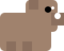

Backend
The true core of our "Live Planting" project, behind the webpage, is a python code, responsible for the conversion of the Arduino outputs into audio signals and for reproducing them, accordingly with the user's inputs from the webpage.
This code mainly revolves around the definition of three servers, including:
- A real time audio engine, responsible for generating audio signals and sending them to the hardware of the computer.
It uses the sounddevice API for communication with audio hardware. - A control server, responsible for translating command from the webpage into internal actions on the audio generation code.
It uses the HTTP control API. - A visualization server, which reads the audio signals, ready to be visualized, and sends them to the part of the webpage that is responsible for such visualization.
It uses a Websocket API for data streaming.
The synthesizer
These three servers all revolve around interactions with a digital object: a synthesizer, which is implemented in the code through a Python class.
A Python class is a blueprint that defines the structure and behavior of objects by grouping data (attributes) and functions (methods) together.
Within the synth class, the most important attributes are:
- Two lists: self.ambient_voices and self.pulse_voices, respectively responsible for containing the ambient voices and the pulse voices which are generated.
- An object: self.pulse_reverb, responsible for applying a reverb effect on the pulse notes.
- An object: self.viz_queue, responsible for containing the processed information for the clients of the visualization server.
- An Output stream: self.stream, responsible for actually obtaining the final audio signals communicating them to the hardware.
class CombinedSynth:
"""
High-quality synth using sounddevice.
Audio always outputs through the PC speakers.
Sends decimated data for visualization via queue.
"""
def __init__(self, samplerate=48000, blocksize=2048, max_ambient_voices=24, max_pulse_voices=24):
self.sr = samplerate
self.blocksize = blocksize
self.max_ambient = max_ambient_voices
self.max_pulse = max_pulse_voices
self.ambient_voices = []
self.pulse_voices = []
self.lock = threading.Lock()
self.master_gain = 0.30
# Reverb for PULSE
self.pulse_reverb = SchroederReverb(self.sr)
# Queue for visualization (non-blocking)
self.viz_queue = queue.Queue(maxsize=50)
# Decimation for viz: send 1 chunk every N
self.viz_decimation = 4
self.viz_counter = 0
# sounddevice stream
self.stream = sd.OutputStream(
samplerate=self.sr,
channels=2,
blocksize=self.blocksize,
dtype="float32",
callback=self._callback
)
Let's now focus on each one of these objects, considering which functions or classes they implement.
Voices
When considering the two voices lists, it is important to ask ourselves what a voice actually is and how it is defined: a voice is not an audio signal, but a parameter structure in which all the information of a to-be-generated audio signal are contained. In other words, it is a list of instructions for the future creation of a sound.
The functions for the creation of pulse and ambient voices are defined within the synth class. These functions mainly revolve around taking as inputs the parameters of a voice and grouping them within one single element, while adding some missing ones as well, therefore creating the voice itself.
def add_ambient_voice(self, midi_note: int, volume=0.12, pan=0.5,
vibrato_hz=5.0, vibrato_cents=10.0,
tremolo_hz=0.20, tremolo_depth=0.10):
v = {
"freq_base": float(midi_to_freq(midi_note)),
"phase": 0.0,
"volume": float(volume),
"pan": float(pan),
"t": 0.0,
"attack": 1.5,
"h1": 1.0, "h2": 0.20, "h3": 0.06,
"vib_rate_hz": float(vibrato_hz),
"vib_depth_hz": 0.08,
"vib_depth_min": 0.5,
"vib_depth_max": float(vibrato_cents),
"trem_hz": float(tremolo_hz),
"trem_depth": float(tremolo_depth),
}
with self.lock:
self.ambient_voices.append(v)
if len(self.ambient_voices) > self.max_ambient:
self.ambient_voices = self.ambient_voices[-self.max_ambient:]
def add_ambient_voice_moving(self, midi_note: int, volume=0.12, pan=0.5):
vib_rate = 4.8 + np.random.rand() * 0.8
vib_max_cents = 8.0 + np.random.rand() * 6.0
trem_hz = 0.10 + np.random.rand() * 0.20
trem_depth = 0.06 + np.random.rand() * 0.10
self.add_ambient_voice(
midi_note,
volume=volume,
pan=pan,
vibrato_hz=vib_rate,
vibrato_cents=vib_max_cents,
tremolo_hz=trem_hz,
tremolo_depth=trem_depth
)
def add_pulse_voice(self, midi_note: int, volume=0.58, duration=0.35, pan=0.5):
"""Adds a PULSE note with envelope and reverb - ANTI-CLICK VERSION"""
v = {
"freq_base": float(midi_to_freq(midi_note)),
"phase": 0.0,
"t": 0.0,
"duration": float(duration),
"h1": 1.0,
"h2": 0.16,
"h3": 0.045,
"vib_rate_hz": 5.2,
"vib_cents": 7.0,
"trem_hz": 0.35,
"trem_depth": 0.12,
"volume": float(volume)
}
with self.lock:
if len(self.pulse_voices) >= self.max_pulse:
self.pulse_voices.pop(0)
self.pulse_voices.append(v)
The functions for the pulse and ambient voices are different because so are the sounds that these voices are associated with. In fact, while add_pulse_voice function establishes fixed duration, vibrato and tremolo parameters for the pulse voice, add_ambient_voice_moving does not define a duration (the pulse voices are infinite until user interruption), chooses random values for the vibrato and tremolo and then calls the add_ambient_voice functions, which actually creates the pulse voice.
Reverb
self.pulse_reverb is the name assigned within the synthesizer to an attribute which is created using the SchroedererReverb class, defined before the synth class.
class SchroederReverb:
def __init__(self, sr: int):
def ms(x):
return max(1, int(sr * (x / 1000.0)))
self.combL = [Comb(ms(m), feedback=0.78) for m in (29.7, 37.1, 41.1, 43.7)]
self.combR = [Comb(ms(m), feedback=0.78) for m in (30.7, 38.1, 42.1, 44.7)]
self.apL = [Allpass(ms(m), g=0.70) for m in (5.0, 1.7)]
self.apR = [Allpass(ms(m), g=0.70) for m in (5.3, 1.9)]
self.wet = 0.42
self.dry = 0.82
self.pre_lp = 0.60
self.zL = 0.0
self.zR = 0.0
def _lp(self, x: np.ndarray, z: float):
a = float(self.pre_lp)
y = np.empty_like(x, dtype=np.float32)
y0 = float(z)
b = 1.0 - a
for i in range(x.shape[0]):
y0 = a * y0 + b * float(x[i])
y[i] = y0
return y, y0
def process(self, xL: np.ndarray, xR: np.ndarray):
inL, self.zL = self._lp(xL, self.zL)
inR, self.zR = self._lp(xR, self.zR)
yL = np.zeros_like(inL, dtype=np.float32)
yR = np.zeros_like(inR, dtype=np.float32)
for c in self.combL:
yL += c.process(inL)
for c in self.combR:
yR += c.process(inR)
yL *= (1.0 / len(self.combL))
yR *= (1.0 / len(self.combR))
for ap in self.apL:
yL = ap.process(yL)
for ap in self.apR:
yR = ap.process(yR)
outL = self.dry * xL + self.wet * yL
outR = self.dry * xR + self.wet * yR
return outL.astype(np.float32), outR.astype(np.float32)
The SchroedererReverb class in turn implements objects like the Comb Class and the Allpass Class.
Comb is responsible for creating from an input signal x, using the inner process function, an infinite series of delayed echoes from the original signal, with decreasing intensity.
Allpass, instead, consists in an all-pass filter, which through its process function can change and darken the timbre of a sound.
But how does the Schroederer reverb actually implement these objects?
The reverb class contains within itself, two Comb objects and two Allpass objects (each pair associated to the right and left sides of the audio hardware). Within SchroedererReverb, a function for applying a low pass filter to a signal is also defined, as well as a final process function. This process function, given two input singal xL and xR, applies to each one of the two the process functions of its respective Comb object and Allpass filter, therefore obtaining versions of xL and xR with reverb applied to them.
Queue
#Queue for visualization (non-blocking)
self.viz_queue = queue.Queue(maxsize=50)
To create the queue object, the Queue class from the queue library is used. This queue will be filled through a process which will be controlled by two other attributes, the self.viz_counter parameter and the self.viz_decimation parameter.
Output stream
#sounddevice stream
self.stream = sd.OutputStream(
samplerate=self.sr,
channels=2,
blocksize=self.blocksize,
dtype="float32",
callback=self._callback
)
def start(self):
self.stream.start()
def stop(self):
self.stream.stop()
self.stream.close
The output stream is created by using the OutputStream class from the sounddevice library. Its creation is associated to the definition of two specific functions to start and stop it. What's most important about it is its usage of the callback function, which is defined within the synth.The callback function is the functional core of the synth. Once the output stream’s process starts running (through another specific function), the callback function is called constantly: it is responsible for reading the ambient and pulse voices within the respective lists and for converting the instructions inside them into the corresponding audio signals. The stream then carries the signals to the hardware and allows it to actually reproduce them.
Callback
def _callback(self, outdata, frames, time_info, status):
"""Callback sounddevice - generates high quality audio"""
if status:
print(f"[AUDIO] Status: {status}")
# If audio is not active, generate silence.
with audio_state_lock:
if not is_audio_playing:
outdata[:, 0] = np.zeros(frames, dtype=np.float32)
outdata[:, 1] = np.zeros(frames, dtype=np.float32)
return
Let’s now focus on how the callback function actually works: first of all, it is built in order to read a flag called is_audio_playing. If the flag is false, when the callback is called it sends to the stream only zeros (which translate to silence) even though ambient or pulse voices are present in the respective lists. However, if the flag is true, when the function is called it builds four separate empty buffers for the pulse and ambient sounds that will be sent to the right and left hardware. Then, it proceeds with the rendering of the voices.
ambL = np.zeros(frames, dtype=np.float32)
ambR = np.zeros(frames, dtype=np.float32)
pulL = np.zeros(frames, dtype=np.float32)
pulR = np.zeros(frames, dtype=np.float32)
The rendering of the voices depends on the fact that the callback and OutputStream both process and reproduce the audio by treating it as segmented into blocks. Therefore, not only it is important to define which time instant, and the corresponding frames are associated to the various blocks, but also to avoid rough transitions from one block to another for the sounds that are reproduced across multiple blocks. This is done by defining and updating, at the end of each block for each active voice, the last time instant (v["t"]) and the last value of the phase (v["phase"]). In this way, when the same voice is rendered at the beginning of the following block, the time and the phase will be coherent.
When the callback renders the voices:
-
For each ambient voice: a set of coefficients associated with the time frames across the block is created. These coefficients are responsible for a vibrato effect. A sine wave is then defined for the voice across the block, considering its initial phase at the beginning of the block, the base frequency and the vibrato coefficients. A set of three harmonics is created from the initial sine and then, through other coefficients, a tremolo effect on the volume is added. The wave is then splitted into two r(ight and left) waves, while adding them to the respective buffers.
# ---- AMBIENCE render (infinite) ---- for v in self.ambient_voices: t_abs = v["t"] + t_block env = np.clip(t_abs / max(1e-6, v["attack"]), 0.0, 1.0).astype(np.float32) depth_lfo = (0.5 * (1.0 + np.sin(2.0 * np.pi * v["vib_depth_hz"] * t_abs))).astype(np.float32) vib_cents_inst = (v["vib_depth_min"] + (v["vib_depth_max"] - v["vib_depth_min"]) * depth_lfo).astype(np.float32) vib = np.sin(2.0 * np.pi * v["vib_rate_hz"] * t_abs).astype(np.float32) freq_mul = (2.0 ** ((vib_cents_inst * vib) / 1200.0)).astype(np.float32) freq_inst = (v["freq_base"] * freq_mul).astype(np.float32) phase = v["phase"] + np.cumsum((2.0 * np.pi * freq_inst) * dt).astype(np.float32) s = ( v["h1"] * np.sin(phase) + v["h2"] * np.sin(2.0 * phase) + v["h3"] * np.sin(3.0 * phase) ).astype(np.float32) trem = np.sin(2.0 * np.pi * v["trem_hz"] * t_abs).astype(np.float32) amp = (1.0 - v["trem_depth"]) + v["trem_depth"] * (0.5 * (trem + 1.0)) wave = s * env * amp * v["volume"] lg = math.cos(v["pan"] * math.pi * 0.5) rg = math.sin(v["pan"] * math.pi * 0.5) ambL += wave * lg ambR += wave * rg v["phase"] = float(phase[-1] % (2.0 * math.pi)) v["t"] = float(t_abs[-1]) -
For each pulse voice the rendering process is similar to the ambient voices, with the only difference being the use of a Hann envelope (function defined before the synth class) on the voices, along with a micro-fade effect on the first samples of each voice to avoid clicking sounds.
# ---- PULSE render ---- new_pulse = [] for v in self.pulse_voices: t_abs = v["t"] + t_block dur = float(v["duration"]) env = hann_env(t_abs, dur) vib = np.sin(2.0 * np.pi * v["vib_rate_hz"] * t_abs).astype(np.float32) freq_mul = (2.0 ** ((v["vib_cents"] * vib) / 1200.0)).astype(np.float32) freq_inst = (v["freq_base"] * freq_mul).astype(np.float32) phase = v["phase"] + np.cumsum((2.0 * np.pi * freq_inst) * dt).astype(np.float32) s = ( v["h1"] * np.sin(phase) + v["h2"] * np.sin(2.0 * phase) + v["h3"] * np.sin(3.0 * phase) ).astype(np.float32) trem = np.sin(2.0 * np.pi * v["trem_hz"] * t_abs).astype(np.float32) amp = (1.0 - v["trem_depth"]) + v["trem_depth"] * (0.5 * (trem + 1.0)) wave = s * env * amp * v["volume"] # Anti-click: micro-fade sui primi 5ms micro_fade_samples = min(int(0.005 * self.sr), len(wave)) if v["t"] < 0.005 and micro_fade_samples > 0: for i in range(micro_fade_samples): t_sample = v["t"] + (i * dt) if t_sample < 0.005: fade_mult = (t_sample / 0.005) ** 1.5 if i < len(wave): wave[i] *= fade_mult wave = softclip(wave, drive=1.05) pulL += wave pulR += 0.995 * wave v["phase"] = float(phase[-1] % (2.0 * math.pi)) v["t"] = float(t_abs[-1]) if env[-1] > 1e-4: new_pulse.append(v) self.pulse_voices = new_pulse[-self.max_pulse:]
The rendering is completed by applying the reverb’s process function on the pulse sines, as well as a final gain factor, self.master_gain. The right and left pulse buffers are summed to the respective ambient buffers to obtain two final buffers. Then, the callback applies a simple limiter to the buffers to prevent clipping and writes the safely bounded audio samples to the output stream. Finally, the callback uses as a block counter self.viz_counter so that, every time a number of audio blocks equal to self.viz_decimation have been processed, only the processed left buffer of the current block is decimated (8x decimation) and added to the visualization queue object. Therefore, the visualization server will receive only a snapshot of the decimated left channel every self.viz_decimation blocks: this makes sure that the server will send the clients, who are responsible for the visualization, audio chunks which won’t be too heavy to process.
# Separated master gain control
ambL *= self.master_gain
ambR *= self.master_gain
pulL *= self.master_gain
pulR *= self.master_gain
# Reverb ONLY on pulses
pulL, pulR = self.pulse_reverb.process(pulL, pulR)
bufL = ambL + pulL
bufR = ambR + pulR
# limiter
peak = max(float(np.max(np.abs(bufL))), float(np.max(np.abs(bufR))))
if peak > 1.0:
bufL /= peak
bufR /= peak
outdata[:, 0] = np.clip(bufL, -1.0, 1.0)
outdata[:, 1] = np.clip(bufR, -1.0, 1.0)
# Send decimated data for visualization (only channel L, 1 every 8 samples)
self.viz_counter += 1
if self.viz_counter >= self.viz_decimation:
self.viz_counter = 0
viz_data = bufL[::8].astype(np.float32) # Decimation 8x (~256 samples from 2048)
try:
self.viz_queue.put_nowait(viz_data.tobytes())
except queue.Full:
pass # Skip if queue is full
Pulse tools
The function hann_env, used during the rendering of the pulse notes, is defined in the “pulse tools” section at the beginning of the code, before the synth class. This function takes as an input the duration of the signal for which the envelope is needed, a fade in ratio and a fade out ratio, and from these inputs it creates and returns a set of coefficients which constitute the envelope itself.
def hann_env(t, dur, fade_in_ratio=0.15, fade_out_ratio=0.25):
"""Super smooth envelope with separate fade-in/out to eliminate clicks."""
env = np.zeros_like(t, dtype=np.float32)
m = (t >= 0.0) & (t <= dur)
fade_in_dur = dur * fade_in_ratio
m_in = (t >= 0.0) & (t <= fade_in_dur)
if fade_in_dur > 0:
x_in = (t[m_in] / fade_in_dur).astype(np.float32)
env[m_in] = (x_in * x_in).astype(np.float32)
fade_out_start = dur * (1.0 - fade_out_ratio)
m_sustain = (t > fade_in_dur) & (t < fade_out_start)
env[m_sustain] = 1.0
m_out = (t >= fade_out_start) & (t <= dur)
if fade_out_ratio > 0:
x_out = ((t[m_out] - fade_out_start) / (dur - fade_out_start)).astype(np.float32)
env[m_out] = (0.5 + 0.5 * np.cos(np.pi * x_out)).astype(np.float32)
return env
The loop player
When considering how the synth is used within the code, it is crucial to consider the loop player as well. The loop player is a function that takes the synth object as an input and uses it to play the pulse-notes loops that have been recorded and stored (for why there are pulse note loops, see the concept page). The function initially defines an empty runtime list and then establishes an infinite while cycle.
The cycle consists of constantly updating the loops list with the current stored loops. If the number of loops has changed or one of the loops has been substituted, the runtime list gets updated.
It is updated by considering all the stored loops and, only for the ones which actually contain at least one event (one pulse note), it adds an element to the runtime list containing the corresponding loop, an index, and two-time parameters.
Out of these two parameters, the first one, t0, is indicative of the current iteration of the loop, while the second one, t_next, is indicative of when to play the next event of the loop within the current iteration. Once the runtime has been updated, the single iteration of the while cycle continues with an inner for cycle: the for cycle checks if the current time has surpassed the t_next for the current events of any of the active loops, and adds in such case the corresponding voices to the synth (t0 and the event indexes are updated).
def loop_player_thread(synth):
"""Thread that plays recorded loops"""
runtime = []
while True:
now = time.time()
with loops_lock:
current_loops = list(loops)
if len(runtime) != len(current_loops) or any(runtime[k]["loop_ref"] is not current_loops[k] for k in range(min(len(runtime), len(current_loops)))):
runtime = []
for lp in current_loops:
if not lp["events"]:
continue
runtime.append({
"loop_ref": lp,
"i": 0,
"t0": now,
"t_next": now + lp["events"][0][0]
})
soonest = None
for st in runtime:
lp = st["loop_ref"]
if not lp["events"]:
continue
while now >= st["t_next"]:
_, midi_note = lp["events"][st["i"]]
synth.add_pulse_voice(midi_note)
st["i"] += 1
if st["i"] >= len(lp["events"]):
st["i"] = 0
st["t0"] += lp["dur"]
st["t_next"] = st["t0"] + lp["events"][st["i"]][0]
if soonest is None or st["t_next"] < soonest:
soonest = st["t_next"]
if soonest is None:
time.sleep(0.01)
else:
time.sleep(max(0.001, min(0.02, soonest - time.time())))
Visualisation server
After having studied how the synth works, as well as some other important functions associated with it, it’s crucial to focus on how the main servers are actually built and how they work. The servers’ creation mainly starts with the definition of functions through the command “async def”. Such command is used for functions which are meant to work as server handlers, which actually allow a server to interact with the real world. Plus, declaring them as asynchronous ensures they are non-blocking and can coexist with other concurrent requests within the same event loop.
The visualization server mainly relies on two asynchronous functions. The first one, websocket_handler, serves the purpose of adding a possible new client of the server to a shared set and/or removing from the same set a client that is disconnecting from the server.
websocket_clients = set()
ws_clients_lock = threading.Lock()
async def websocket_handler(websocket):
"""Handles WebSocket connections for visualization"""
with ws_clients_lock:
websocket_clients.add(websocket)
print(f"[WS] Client connected. Total: {len(websocket_clients)}")
try:
# Keep listening (even if no messages are expected)
async for message in websocket:
pass
except websockets.exceptions.ConnectionClosed:
pass
finally:
with ws_clients_lock:
websocket_clients.discard(websocket)
print(f"[WS] Client disconnected. Total: {len(websocket_clients)}")
The second one, viz_broadcaster, which takes as an input the synthesizer object, establishes an infinite while cycle. The cycle reads at every iteration, from the queue attribute of the synthesizer, the first-in-line audio chunk of the queue (processed and decimated left channel audio block). It then sends the chunk to the list of all the currently connected clients, which will in turn visualize it. It also reports every time 500 chunks have been sent to the clients.
async def viz_broadcaster(synth):
"""Sends visualization data to WebSocket clients"""
chunks_sent = 0
while True:
try:
# Read from queue (with timeout)
chunk = await asyncio.get_event_loop().run_in_executor(
None, synth.viz_queue.get, True, 0.5
)
except queue.Empty:
await asyncio.sleep(0.001)
continue
# Send to all connected clients
with ws_clients_lock:
clients = list(websocket_clients)
if clients:
for client in clients:
try:
await asyncio.wait_for(client.send(chunk), timeout=0.2)
except (asyncio.TimeoutError, Exception):
pass # Ignore send errors
chunks_sent += 1
# Report every 500 chunk
if chunks_sent % 500 == 0:
queue_size = synth.viz_queue.qsize()
print(f"[VIZ] Sent {chunks_sent} chunks | Queue: {queue_size}/50")
Control server
The HTTP or control server relies on many asynchronous functions. Each one of them has the task of allowing the server to act on how the real time engine is reproducing the audio, based on a specific user request from the web page. However, these following functions are defined as being dependent on a generic external request and still need to be associated to their specific respective user request, in order for the control server to actually use them.
The handle_start function is responsible for changing, after receiving a generic external request, the is_audio_playing flag to True. It will be used by the server to ask the callback, whenever the user requests it from the webpage, to stop sending to the Output stream only zeros and to start rendering the voices in the lists. This functions also adds three notes to the synthesizer to test its correct functioning.
async def handle_start(request):
"""POST /start - Start audio and send 3 test notes"""
global is_audio_playing
with audio_state_lock:
is_audio_playing = True
# Send 3 test notes to check audio
synth = request.app['synth']
synth.add_pulse_voice(60) # C4
await asyncio.sleep(0.3)
synth.add_pulse_voice(64) # E4
await asyncio.sleep(0.3)
synth.add_pulse_voice(67) # G4
print("[HTTP] ▶️ Audio START + test notes sent")
return web.json_response({
'status': 'started',
'message': 'Audio started on PC (you should hear 3 test notes!)'
}, headers={'Access-Control-Allow-Origin': '*'})
The handle_stop function, after a generic request, changes the is_audio_playing flag to False. Additionally, it also empties the voices’ lists, so that when the user stops the synthesizer the stored voices are also reset.
async def handle_stop(request):
"""POST /stop - Stop audio"""
global is_audio_playing
with audio_state_lock:
is_audio_playing = False
# Clean up also active voices
synth = request.app['synth']
synth.clear_ambient()
synth.clear_pulse()
print("[HTTP] ⏸️ Audio STOP")
return web.json_response({
'status': 'stopped',
'message': 'Audio stopped'
}, headers={'Access-Control-Allow-Origin': '*'})
The handle_start_rec changes the is_recording flag to True and defines and empty list for the recorded events.
The handle_stop_rec changes the flag to False, creates a loop from the recorded events and the duration of the recording and appends it to the loops list. However, none of these two functions is responsible for the recording itself.
async def handle_start_rec(request):
"""POST /start_rec - Start loop recording"""
global is_recording, rec_start_t, rec_events
with recording_lock:
if not is_recording:
is_recording = True
rec_start_t = time.time()
rec_events = []
print("[HTTP] 🔴 Recording START")
return web.json_response({
'status': 'recording',
'recording': True
}, headers={'Access-Control-Allow-Origin': '*'})
async def handle_stop_rec(request):
"""POST /stop_rec - Stop loop recording"""
global is_recording, rec_start_t, rec_events
with recording_lock:
if is_recording:
is_recording = False
now = time.time()
dur = max(0.05, now - rec_start_t)
rec_events_sorted = sorted(rec_events, key=lambda x: x[0])
loop = {"events": rec_events_sorted, "dur": dur}
with loops_lock:
loops.append(loop)
if len(loops) > MAX_LOOPS:
loops.pop(0)
print(f"[HTTP] ⏹️ Recording STOP → Loop saved (dur={dur:.2f}s, events={len(rec_events_sorted)})")
return web.json_response({
'status': 'stopped',
'recording': False
}, headers={'Access-Control-Allow-Origin': '*'})
The handle_clear_loops and handle_clear_ambient functions are respectively responsible for clearing the recorded loops/the synth voices that the synth is playing from its list and therefore resetting them, without stopping the callback from continuing to process the audio. Both functions exploit other “clear” functions defined in within the synth class.
async def handle_clear_loops(request):
"""POST /clear_loops - Clears all loops"""
with loops_lock:
loops.clear()
print("[HTTP] 🗑️ Loops cleared")
return web.json_response({
'status': 'loops_cleared'
}, headers={'Access-Control-Allow-Origin': '*'})
async def handle_clear_ambient(request):
"""POST /clear_ambient - Clears ambient voices"""
synth = request.app['synth']
synth.clear_ambient()
print("[HTTP] 🗑️ Ambient cleared")
return web.json_response({
'status': 'ambient_cleared'
}, headers={'Access-Control-Allow-Origin': '*'})
Real time audio engine server
The definition of the real time audio server is dependent on another asynchronous function, serial_reader.
# -----------------------------
# SERIAL READER (Arduino)
# -----------------------------
async def serial_reader(synth):
"""Reads data from Arduino and generates audio"""
global is_recording, rec_start_t, rec_events
PORT = "COM5"
BAUD = 9600
AMB_BASE_ROOT = 36 # C2
H_MIN = 200
H_MAX = 400
AMB_WINDOW_SEC = 20.0
PULSE_BASE_ROOT = 24
PULSE_SEMIS_MAX = 60
PULSE_MIN_SEMIS_TO_PLAY = 12
PULSE_COOLDOWN = 0.2
try:
ser = serial.Serial(PORT, BAUD, timeout=1)
print(f"Connected to Arduino on {PORT}")
except Exception as e:
print(f"⚠️ ERROR: unable to connect to Arduino on {PORT}")
print(f" {e}")
print(" The program will continue without Arduino (WebSocket testing only)")
ser = None
The serial_reader function takes as an input a synth object, and initially it defines a set of parameters. Among these parameters, the BAUD and PORT parameters are relevant to the first operation that the code executes through a try operator, which is to create a digital serial door. This door consists in a digital equivalent of the link between the computer and the Arduino module, through which the code can import and read the Arduino outputs.
try:
while True:
if ser:
line = ser.readline().decode("utf-8", errors="ignore").strip()
if not line or line.startswith("#"):
await asyncio.sleep(0.001)
continue
parts = line.split(",")
if len(parts) < 2:
await asyncio.sleep(0.001)
continue
try:
hum_raw = int(parts[0])
bio_raw = int(parts[1])
except:
await asyncio.sleep(0.001)
continue
now = time.time()
Then, the code sets up an infinite while(true) cycle. For each iteration of this cycle, the code tries to read the correspondent current output of Arduino. A valid output should consist in a line containing two numbers, separated by a comma.
If the output is valid, the code takes the two numbers and assigns the first one to a hum_raw variable and the second one to a bio_raw variable. This step therefore consists in saving the rough biodata of the plant, coming through Arduino. The next one will be the mapping of this current biodata. But, before considering this next step, it is useful to study some other tools and functions which are defined at the very beginning of the code and that will be now used.
Musical utils
The function midi_to_freq takes as an input a midi frequency value and translates it into a Hertz frequency value. The midi_from_adc_semitones function takes as an input a base frequency, called base_root (default value 24 midi), and an adc parameter that goes from 0 to 1023. It turns the adc into a number of semitones (from a minimum of 0 to a maximum of 60) and it returns the number of semitones summed to the base root and the number itself.
def midi_to_freq(m):
return 440.0 * (2.0 ** ((m - 69) / 12.0))
def midi_from_adc_semitones(adc, base_root=24, semis_max=60):
adc = max(0, min(1023, int(adc)))
semis = int(round((adc / 1023.0) * semis_max))
return base_root + semis, semis
The build_major_offsets_3_octaves function uses a list of degrees (defined before it as a list of the number of semitones above the tonic note of all the notes in a major scale). This list is used to build another list containing the numbers of semitones above a generic base root of all the notes that are contained in three octaves of major scale (all starting from the base root).
The quantize_to_major function is related to build_major_offsets_3_octaves, in the sense that it takes as an input a generic number of semitones above a base root and rounds it to the nearest major offset in the correspondent octave (in this case five octaves are considered). It will be used in the pulse mapping.
MAJOR_DEGREES = [0, 2, 4, 5, 7, 9, 11]
def quantize_to_major(semis: int, semis_max=60) -> int:
semis = max(0, min(semis_max, int(semis)))
octave = semis // 12
degree = semis % 12
nearest = min(MAJOR_DEGREES, key=lambda d: abs(d - degree))
q = octave * 12 + nearest
return min(q, semis_max)
def build_major_offsets_3_octaves(max_semitones=36):
offs = []
for octv in range(0, 4):
for d in MAJOR_DEGREES:
s = octv * 12 + d
if s <= max_semitones:
offs.append(s)
return sorted(set(offs))
MAJOR_OFFSETS = build_major_offsets_3_octaves(36)
Also, build_major_offsets_3_octaves is used in the humidity_to_note function which takes as an input an h value ( presumably a raw humidity biodata value). The h value is turned into a percentage by considering within a range of biodata values that goes from 200 to 400. Then, this percentage is used to obtain a value from 0 to 36, which is in turn rounded and finally swapped with the nearest major offset, all to obtain a mapped equivalent of h, in terms of semitones above the base root.
def humidity_to_note(h: float, base_root: int, h_min=200.0, h_max=400.0):
if h <= h_min:
semis = 0
elif h >= h_max:
semis = 36
else:
x = (h - h_min) / (h_max - h_min)
semis = int(round(x * 36))
nearest = min(MAJOR_OFFSETS, key=lambda o: abs(o - semis))
return base_root + nearest, nearest
Mapping of biodata
Going back to the serial reader and the mapping of the impulses, the while cycle at every iteration applies the humidity_to_note function to the hum_raw variable, therefore assigning the biodata humidity value a correspondent note in major scale (expressed as a number of semitones above the base root).
If the number of semitones is equal to zero (invalid value that happens when the humidity sensor is disconnected from Arduino) twice in a row, the synthesizer's ambient voices are cleared, and a specific flag is changed to "true". This flag will return to "false" when the number of semitones will return to being valid. The valid hum_raw values are appended to a list and, when the iteration's time has surpassed a time limit determined by AMB_WINDOW_SEC , these values in the list are averaged. Then, the serial reader once again uses humidity_to_note to turn the average humidity to a number of semitones.
Finally, through add_ambient_voice_moving, it adds to the synth an ambient voice with a frequency associated to the average number of semitones. This completes the humidity mapping.
# ---- AMBIENCE (only if audio is playing) ----
with audio_state_lock:
if is_audio_playing:
_, hum_semis_now = humidity_to_note(hum_raw, base_root=AMB_BASE_ROOT, h_min=H_MIN, h_max=H_MAX)
if hum_semis_now == 0:
zero_semis_streak += 1
else:
zero_semis_streak = 0
amb_stopped_due_zero = False
if zero_semis_streak >= 2:
if not amb_stopped_due_zero:
synth.clear_ambient()
hum_samples.clear()
amb_window_start = now
amb_stopped_due_zero = True
else:
hum_samples.append(hum_raw)
if (now - amb_window_start) >= AMB_WINDOW_SEC and hum_samples:
avg_h = sum(hum_samples) / len(hum_samples)
amb_midi, _ = humidity_to_note(avg_h, base_root=AMB_BASE_ROOT, h_min=H_MIN, h_max=H_MAX)
synth.add_ambient_voice_moving(amb_midi, volume=0.12, pan=0.5)
hum_samples.clear()
amb_window_start = now
Next is the bioelectrical impulse mapping: at every iteration the current bio_raw value is turned into a number of semitones using midi_from_adc_semitones, this number of semitones is rounded to the closest one in major scale using quantize_to_major. This number of semitones is added to the base root, obtaining a total note midi value.
If the value is above a minimum threshold and the time exceeds a cooldown time, the pulse note is added to the synth. If a loop recording is happening, the note is also saved as an event for the loop that is being recorded.
If the output stream has started and the is_audio_playing flag is true, these mapped voices, once added to the synth, will be translated into audio signals by the callback and sent by the stream to the hardware! In any instances in which the serial_reader is running but the is_audio_playing flag is false, the pulse and ambient voices corresponding to the Arduino outputs will be added to the synth, but the active callback will not read the voices' lists and will keep sending to the output stream only zeros.
# ---- PULSE (only if audio is playing) ----
_, pulse_semis_raw = midi_from_adc_semitones(bio_raw, base_root=PULSE_BASE_ROOT, semis_max=PULSE_SEMIS_MAX)
pulse_semis = quantize_to_major(pulse_semis_raw, PULSE_SEMIS_MAX)
pulse_midi = PULSE_BASE_ROOT + pulse_semis
if (pulse_semis >= PULSE_MIN_SEMIS_TO_PLAY) and ((now - last_pulse_trig) >= PULSE_COOLDOWN):
synth.add_pulse_voice(pulse_midi)
last_pulse_trig = now
with recording_lock:
if is_recording:
rec_events.append((now - rec_start_t, pulse_midi))
Main
The final key asynchronous function is the main function. If the code runs the main, it is responsible for using all the asynchronous and non-asynchronous functions, as well as all the classes, defined above to actually create the synthesizer and the functioning servers.
In fact, this function initially creates a synth object using the Synth class. It then creates the websocket and HTTP servers, which will use their respective asynchronous functions. In the case of the HTTP server, specific user requests are associated to the various functions used by the control server, making it fully functioning.
async def main():
global synth
# Create synth
synth = CombinedSynth(max_ambient_voices=24, max_pulse_voices=24)
synth.start()
print("✅ Audio engine activated (sounddevice)")
# Start loop player
threading.Thread(target=loop_player_thread, args=(synth,), daemon=True).start()
print("✅ Loop player activated")
# Start WebSocket server
ws_server = await websockets.serve(websocket_handler, "localhost", 8765)
print("✅ WebSocket server activated on ws://localhost:8765")
# Start viz broadcaster
asyncio.create_task(viz_broadcaster(synth))
print("✅ Visualization broadcaster activated")
# Configure HTTP server
app = web.Application()
app['synth'] = synth
# Routes
app.router.add_post('/start', handle_start)
app.router.add_post('/stop', handle_stop)
app.router.add_post('/start_rec', handle_start_rec)
app.router.add_post('/stop_rec', handle_stop_rec)
app.router.add_post('/clear_loops', handle_clear_loops)
app.router.add_post('/clear_ambient', handle_clear_ambient)
# CORS preflight
app.router.add_options('/start', handle_options)
app.router.add_options('/stop', handle_options)
app.router.add_options('/start_rec', handle_options)
app.router.add_options('/stop_rec', handle_options)
app.router.add_options('/clear_loops', handle_options)
app.router.add_options('/clear_ambient', handle_options)
# Start HTTP server
runner = web.AppRunner(app)
await runner.setup()
site = web.TCPSite(runner, 'localhost', 8080)
await site.start()
print("✅ HTTP server activated on http://localhost:8080")
Finally, the function runs the serial reader and therefore the real time audio engine is operational as well.
# Start serial reader
await serial_reader(synth)
In conclusion
In its final lines, the code runs the main function, the synth and servers are created, and the output stream produces silence, even though the Arduino values are being mapped and saved by the serial reader. This will of course change when the user, through the control server, will ask the callback to start reproducing the mapped biodata.
if __name__ == "__main__":
try:
asyncio.run(main())
except KeyboardInterrupt:
print("\n🛑 Shutting down...")
print("✅ All closed. Goodbye!")
Frontend
For the frontend part of our project, we implemented an interactive web application that combines dynamic animations and real-time audio visualization coupled with the Python backend architecture.
General Architecture and Project Structure
The application has a multi-page design with a navigation system in common for all the pages, for easier access to other pages.
Since the whole project revolves around plants, we decided that the web app theme would be completely inspired by nature: grass, flowers and animals.
For this reason, the navigation system is visually made of flowers, the homepage has cows and ducks that move around and jump with random mechanisms, the color palette is made of soft pastel colors that recall nature, and the background recalls a flowery meadow.
All images are created using Figma, and this contributes to a cohesive look for the entire project.
The project consists of four main pages:
- Home Page (homepage.html) - Landing page with animal animations
- Live Listening (live_listening.html) - Webpage about audio listening and visualization of waveforms
- Codes (codes.html) - Page with code documentation
- Concept (concept.html) - The concept of the project is explained
Every page is handled by a specific stylesheet that ensures consistency with the overall design of the system.
The backend part is handled by an asynchronous Python server that communicates with the frontend using WebSocket technology.
Navigation system 
The code for the navigation system is in nav.js and follows a DOM-based dynamic approach.
It consists of:
- Personalized flower (menu-flower) with colored petals
- Text button with the label of the section
- CSS Animations on hover (center rotation, scale up)
The navigation menu is fixed on the right side of the screen, which means it always stays visible no matter the scroll position.
Interactive Animations - Cows, Ducks, and the Environment
Cow Animation 
The SimpleCow class has a simulated physical movement system that responds to collisions.
Each cow:
- Has movement properties (x, y, vx, vy), which model movement along horizontal and vertical axes
- Has a common color scheme that is cyclically distributed among instances (4 variants)
- Uses random pauses, timers which introduce random movement (1% probability per frame)
- Nicely bounces on the edges of the screen and of the START button
In the constructor of the SimpleCow class, the valid area is calculated, where the cows can move, avoiding the navigation menu and the START button. For this task the property offsetWidth of nav and the method getBoundingClientRect for the START button are used.
In the update method, the movement of the Cows is handled.
Random pauses are implemented in the movement simply using boolean property paused of the class SimpleCow. Cows have a 1% probability of being paused at each frame. When paused, the cow does not move for a random time between 500ms and 2000ms, after which it resumes its movement.
The bouncing mechanism is implemented by checking if the cow's position exceeds the valid area boundaries. If it does, the corresponding velocity component (vx or vy) is inverted and the cow bounces back into the valid area:
// Gentle bounce on the horizontal edges
if (this.x < 0) {
this.x = 0;
this.vx *= -1;
} else if (this.x > window.innerWidth - navWidth - 80) {
this.x = window.innerWidth - navWidth - 80;
this.vx *= -1;
}
For the START button, the same logic is used, but the cow's direction is reversed by inverting vx or vy depending on which side it approaches from.
// Checks collision with button
if (this.x + cowWidth > buttonRect.left - margin &&
this.x < buttonRect.right + margin &&
this.y + cowHeight > buttonRect.top - margin &&
this.y < buttonRect.bottom + margin) {
// Determines to which side the cow should bounce
const fromLeft = this.x + cowWidth / 2 < buttonRect.left;
const fromRight = this.x + cowWidth / 2 > buttonRect.right;
const fromTop = this.y + cowHeight / 2 < buttonRect.top;
const fromBottom = this.y + cowHeight / 2 > buttonRect.bottom;
if (fromLeft || fromRight) {
this.vx *= -1;
if (fromLeft) {
this.x = buttonRect.left - cowWidth - margin;
} else {
this.x = buttonRect.right + margin;
}
}
if (fromTop || fromBottom) {
this.vy *= -1;
if (fromTop) {
this.y = buttonRect.top - cowHeight - margin;
} else {
this.y = buttonRect.bottom + margin;
}
}
}
Random changes of direction and speed are also implemented: every update, the velocity components might change with a probability of 2%, simulating a small, spontaneous change in direction and speed.
// Random direction change
if (Math.random() < 0.02) {
this.vx += (Math.random() - 0.5) * 0.3;
this.vy += (Math.random() - 0.5) * 0.2;
const maxSpeed = 1.5; //prevents excessive speed
if (Math.abs(this.vx) > maxSpeed) this.vx = maxSpeed * Math.sign(this.vx);
if (Math.abs(this.vy) > maxSpeed * 0.3) this.vy = maxSpeed * 0.3 * Math.sign(this.vy);
}
if (this.vx !== 0) {
this.direction = this.vx > 0 ? 1 : -1; //change of direction
}
Duck Animation 
Ducks move similarly to cows, but with a higher speed. Also, a logic for random jumps is implemented.
Each duck has a 0.5% probability of jumping at each frame. When jumping, the duck's y position is temporarily decreased by a fixed jumpHeight value for a short duration (jumpTimer), then it returns to its original y position.
// Salto casuale
if (!this.jumping && Math.random() < 0.005) {
this.jumping = true;
this.jumpTimer = 10;
this.startY = this.y;
}
if (this.jumping) {
this.y = this.startY - this.jumpHeight;
this.jumpTimer--;
if (this.jumpTimer <= 0) {
this.jumping = false;
this.y = this.startY;
}
}
Decorative Grass 
The grass items are added dinamically to the pages using the function addGrassItem() in javascript. Each grass item has random dimensions, position and color. Also, a z-index of 1 is assigned to the grass items to ensure they stay in the background.
function addGrassItem() {
const e = document.createElement("div");
e.classList.add("grass");
const maxX = window.innerWidth;
const maxY = window.innerHeight;
e.style.position = "absolute";
e.style.left = Math.random() * maxX + "px"; //random position
e.style.top = Math.random() * maxY + "px"; //random position
const color = Math.round(Math.random()); //random color (dark or light)
(color === 0) ? e.classList.add("grass_dark") : e.classList.add("grass_light");
const size = Math.random() * 20 + 20; //random size between 20 and 40px
e.style.width = size + "px";
e.style.height = size + "px";
document.body.appendChild(e);
}
Background flowers 
Some flowers are added dinamically to the pages using the function addFlowerItem() in javascript. Their position is random, but some constraints are added to avoid overlapping with the navigation menu, other flowers or audio settings in the live listening page. A number of attempts is set to try to find a valid position for each flower, if none is found, the flower is not added.
Their z-index is put to 2, to stay over the grass, but under everything else.
function getRandomPosition(flowerSize, maxAttempts = 50) {
const maxX = window.innerWidth - flowerSize;
const maxY = window.innerHeight - flowerSize;
// get position and dimension of audio container
const audioContainer = document.querySelector('.audio-container');
let audioContainerRect = null;
if (audioContainer) {
audioContainerRect = audioContainer.getBoundingClientRect();
}
//...get other positions to avoid...
for (let attempt = 0; attempt < maxAttempts; attempt++) { //maxAttempt = 50
const x = Math.random() * maxX;
const y = Math.random() * maxY;
// check collision with other flowers
if (checkCollision(x, y, flowerSize)) {
continue;
}
//...check for other collisions...
return { x, y };
}
return null; //if no valid position, don't add the flower
}
function addFlowerItem() {
//...
if (!position) {
console.warn("The flower could not be added: insufficient space");
return;
}